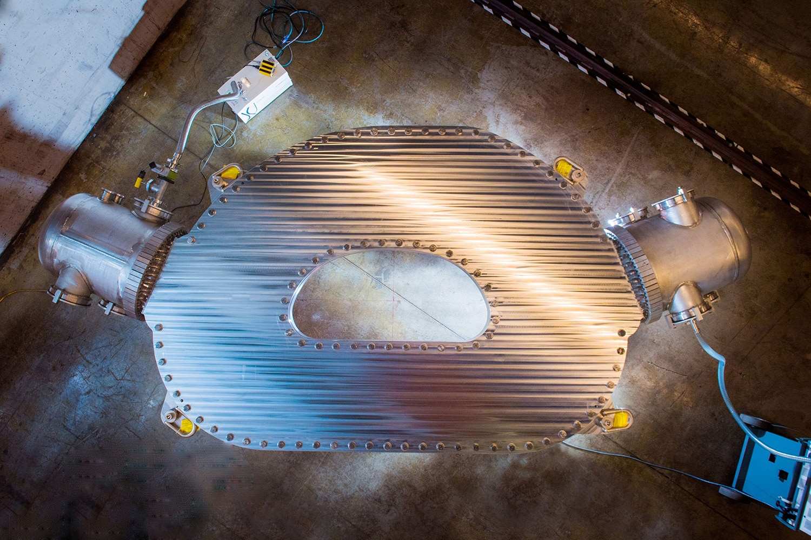

MIT in collaboration with Commonwealth Fusion Systems created a 20 Tesla magnet.
More on APIs
I just got the inital implementation of application isolates working
(in browser only, without pulling application code from remote location)
and as part of that did a pass on API implementations.
This can be accomplished by adding more precision to the @Api decorator:
I sent quite a bit of time developing with Hibernate (in Java world). It is a great piece of technology but one thing I never liked about it is the fact that entities can be attached and detached from the ORM session. For INSERTs vs UPDATESs AIRport got around this by maintaing an __originalValues__ property on each object retrieved from the database and diffing it with the passed in values on the "save" operation. But DELETEs cannot be just as easily maintained.
Object state is what keeps track of if the object has been deleted or not and what the original values of the object were. It is possible that the application developer wants to maintain all CRUD logic internally to the application (at least on certain APIs). If that's the case AIRport can accomidate that but scrubbing all object State when an API is called.
Locking down APIs
One thing that hasn't come up yet though is the ability to differentiate between "Application APIs" and "External APIs". An Application developer should be able to lock down APIs to be either other Application facing or External facing (like web UI, or anything else not running in an App isolate).This can be accomplished by adding more precision to the @Api decorator:
@Injectable()
export class AnApiClass {
@Api({ applications: true, external: true})
async anApi(): any {
...
}
}
Current thinking is to leave the API wide open by default and allow the
developers to lock it down as needed.
AIRport path
One of the tradeoffs that AIRport had to make is to give up some of the elegance when it comes to deleting records but instead not have to maintain a session.I sent quite a bit of time developing with Hibernate (in Java world). It is a great piece of technology but one thing I never liked about it is the fact that entities can be attached and detached from the ORM session. For INSERTs vs UPDATESs AIRport got around this by maintaing an __originalValues__ property on each object retrieved from the database and diffing it with the passed in values on the "save" operation. But DELETEs cannot be just as easily maintained.
Ackward DELETEs
The best I can come with for deletes so far is the following:
/*
* Marks the object as deleted in
*/
markAsDeleted(record)
/*
*
*/
markAsDeleted(record, array) // removes from array, maintains .__deleted__ array property
/*
*
*/
getNonDeleted(array)
/*
*
*/
isDeleted(record)
not a common (discouraged even) operation so no big deal
Locking down object state
Thinking about deletes made me realize that one more API lockdown that can be added to @Api - ability to pass in Object State.Object state is what keeps track of if the object has been deleted or not and what the original values of the object were. It is possible that the application developer wants to maintain all CRUD logic internally to the application (at least on certain APIs). If that's the case AIRport can accomidate that but scrubbing all object State when an API is called.
@Injectable()
export class AnApiClass {
@Api({ objectState: true})
async anApi(): any {
...
}
}